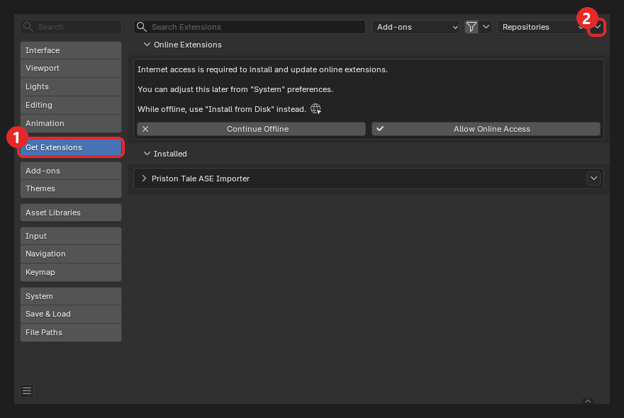
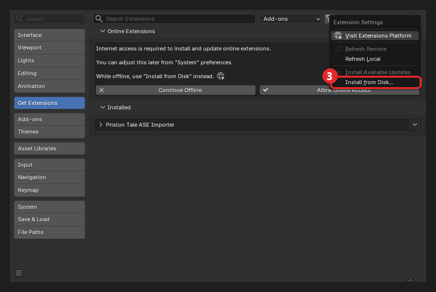
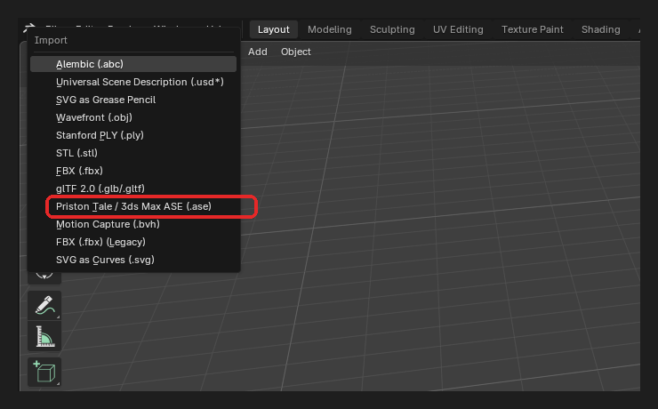
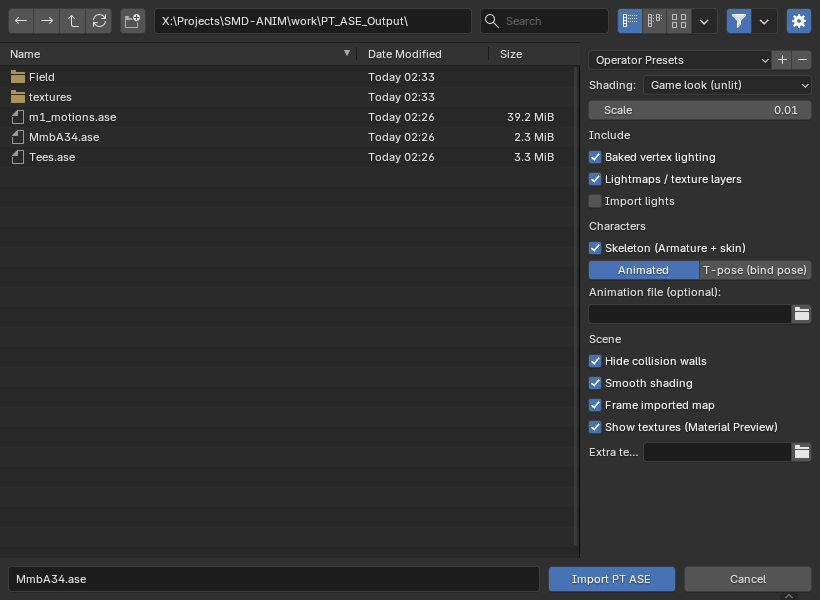
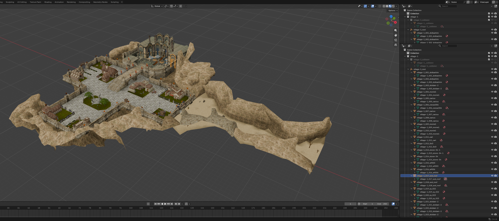
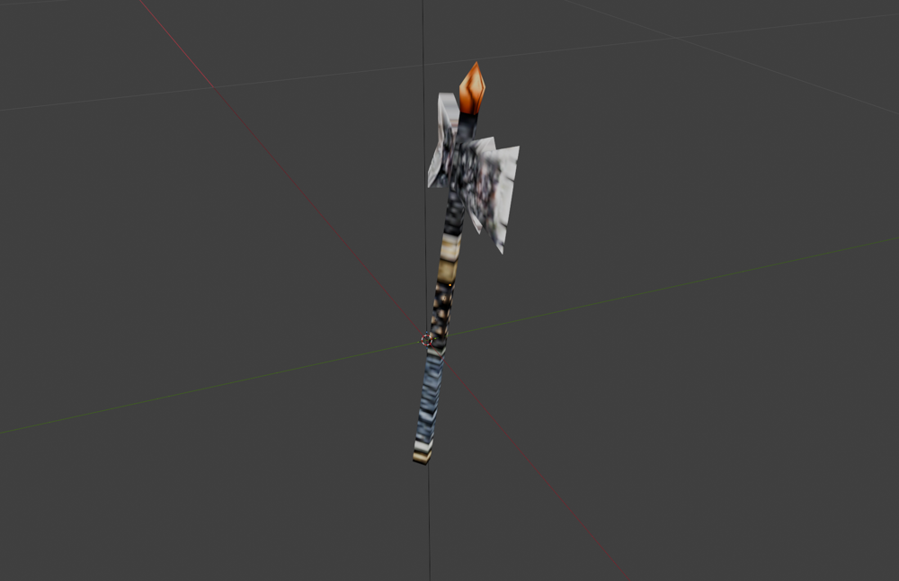
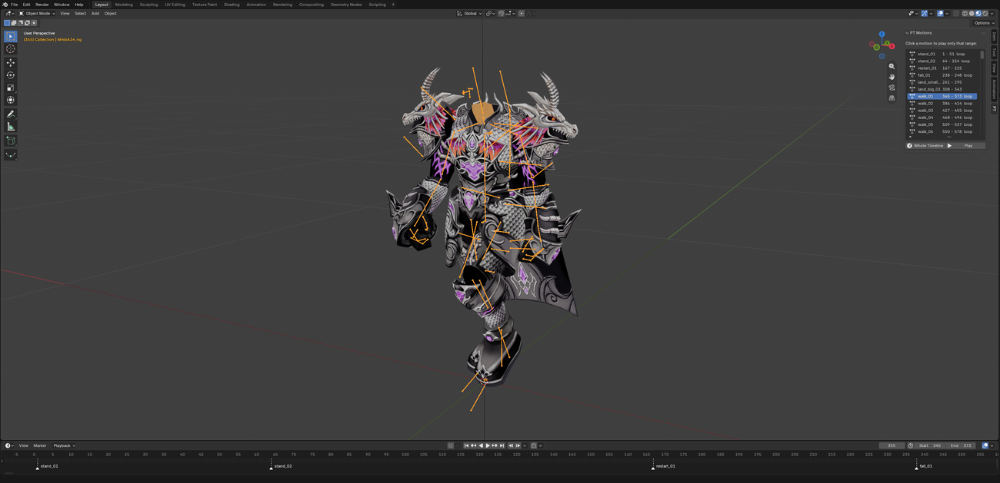
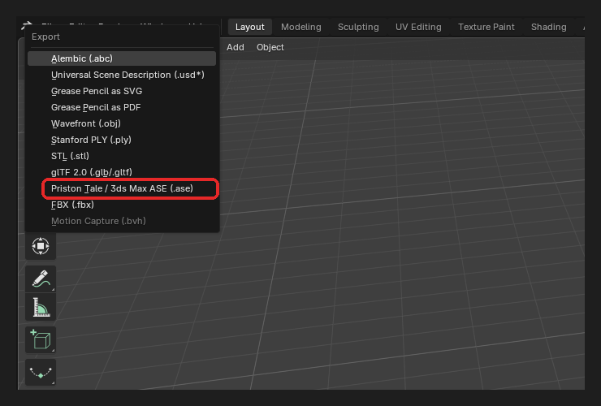
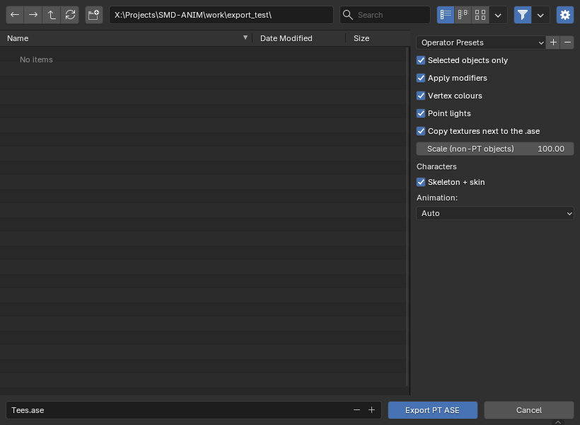

PT Tools for Blender
Convert Priston Tale game files and work with them in Blender 4.2 or newer (tested on 5.2):
maps, weapons and items, monsters and characters, with textures, skeletons and animation.
(Using 3ds Max? Open Guide_3dsMax.html instead.)
1. What you get
| File / folder | What it is |
|---|---|
PT_SMD2ASE.exe | The converter: game .smd files → .ase files. Nothing to install. |
Blender\pt_ase_importer.zip | The Blender add-on: importer, exporter and motion list. |
smd2ase.exe | The same converter for the command line (optional). |
3dsMax\ | The 3ds Max plug-in (see the 3ds Max guide). |
Source\ | All source code. |
2. Install
The converter
Nothing to install. It runs on Windows 10 and 11. If Windows says "Windows protected your PC", click More info → Run anyway (the program isn't signed).
The Blender add-on (once)
- Edit → Preferences…, then click Get Extensions.
- Click the small ⌄ at the far right of the top row (the one right of Repositories).
- Choose Install from Disk… and pick
Blender\pt_ase_importer.zip.


3. Convert the game files
- Double-click PT_SMD2ASE.exe.
- Choose an Output folder (or keep the one shown).
- Drag an
.smdfile, or a whole folder, onto the big box at the top. A single file converts straight away. - For a folder, the window shows how many files it found and how long it will take. Tick I understand, continue and click Convert.
- Click Open to see the results.


Where the game files are
Inside your Priston Tale folder:
| Folder | Contains |
|---|---|
Field\ | Maps, plus the objects placed on them (trees, buildings, animated props) |
image\Sinimage\Items\DropItem\ | Weapons (itW…), armour, shields and other items |
char\monster\ | Monsters, one folder each |
char\tmABCD\ | Player armour (bodies), heads and costumes |
char\npc\ | NPCs |
Converter options
| Option | What it does |
|---|---|
| Copy + decrypt textures | The game's textures are scrambled. This writes readable copies into a textures
folder in the output folder. Leave it ticked. |
| Baked vertex lighting | Keeps the game's lighting and shadows on maps. Untick it for maps you will put back into the game. |
| Stage lights | Writes a map's light points (lamps, fires) as lights. |
| Split maps into separate objects | Cuts a map into separate objects (buildings, trees, terrain…), close to
how the original .ase files were made. Untick it to get the whole map as one mesh. |
| Collision walls | The invisible walls of a map: separate object (easy to hide), keep in mesh, or remove. |
| Convert | Everything, Terrain maps only, or Objects, characters, monsters (skips map terrain). |
.ase files need the textures folder.
Player armour and heads also need their class animation file (m1_motions.ase … m8_motions.ase),
which the converter writes into the same folder.Command line, for scripts: smd2ase.exe <file or folder> -o <output folder> --textures.
Run smd2ase.exe --help for every option.
4. Import into Blender
- File → Import → Priston Tale / 3ds Max ASE (.ase).
- Select one or more
.asefiles (Ctrl/Shift-click for several). Check the options on the right. - Click Import PT ASE. A progress bar runs at the bottom (Esc cancels). When it's done, the view zooms to what you imported and switches to Material Preview so the textures show.

Import menu">
| Option | What it does |
|---|---|
| Shading | Game look (unlit) shows the model exactly as the game does and ignores your lights. Lit (Principled) keeps the textures and lets your own lights and sky shade it. |
| Scale | Default 0.01, so a map is a few hundred metres across. Use the same value for everything so maps keep lining up. |
| Baked vertex lighting | Uses the game's lighting stored in the map. |
| Lightmaps / texture layers | Dungeons and newer maps have a second, pre-lit texture layer. |
| Import lights | Brings in a map's light points. |
| Skeleton (Armature + skin) | Characters and monsters get an Armature with the mesh skinned to it. Untick for a plain mesh. |
| Animated / T-pose | Animated loads every animation and the motion list. T-pose loads only the bones, in their rest pose. |
| Animation file | Optional. Pick a motions file yourself (see section 9). |
| Hide collision walls | Puts the invisible walls in a hidden collection. |
| Smooth shading | Smooth instead of faceted surfaces. |
| Frame imported map / Show textures | Zoom to the result and switch to Material Preview. Untick to keep your current view. |
| Extra texture folder | Another folder to look for textures in, by file name. The game's own scrambled textures work here too. |
5. Maps
- Convert a map's
.smdfromField\, or the wholeFieldfolder. - Import the
.ase. Maps keep their real position in the world, so importing several makes them line up exactly as in the game. - The map comes in as separate objects: terrain, buildings, trees, walls. They are listed in the Outliner under
<map>_root. Each name ends with the object's main texture (village-1_017_sod_roof), because the game file keeps the objects apart but not their names. - Every object has its pivot in its own middle, so the move gizmo appears on the object you select.
- The split is close to the original files but not exact: copies of the same thing next to each other (a row of torches) can come out as one object, and some big objects in a few pieces. Attach or detach as you like; the game joins everything into one map anyway.
- The invisible collision walls go into a hidden
<map>_collisioncollection. - Objects placed on the map (trees, houses, windmills) are separate
.asefiles in the same zone folder. Import them as well. - The first time, Blender takes a few seconds to compile its shaders before the textures appear.

6. Weapons and items
- Convert files from
image\Sinimage\Items\DropItem\. Names starting withitWare weapons; the otherit…files are armour, shields and other items. - Import the
.ase. Weapons and items are plain textured models with no skeleton.

itWA105).7. Monsters
- Convert a monster's
.smdfrom its folder inchar\monster\. Each monster's animation is stored inside its own.ase, so you only need that one file. - Monsters with several detail levels keep only the high-detail model.
- Import with Animated. The monster comes in as an Armature with the mesh skinned to it and all its animation (walk, run, attack, damage, die…).
- Press N in the 3D view and open the PT tab to play the motions (see Playing motions).
…-die.smd). Convert and import it the same way.
A few monsters keep their animation in a separate motion file (for example MonGknight-model uses mGknight);
the converter still puts the animation in the .ase so you can watch it.8. Characters
Player armour (bodies), heads and costumes are in char\tmABCD\. Each class shares one animation file,
which the converter writes next to the armour automatically:
| File names | Class | Animation file |
|---|---|---|
TmbA TmbB MmbA | Mechanician, Fighter, Knight | m1_motions.ase |
TfbD MfbB | Archer, Atalanta | m2_motions.ase |
MmbD | Magician | m3_motions.ase |
TmbC | Pikeman | m4_motions.ase |
MfbC | Priestess | m5_motions.ase |
TfbE | Assassin | m6_motions.ase |
MmbE | Shaman | m7_motions.ase |
TfbF | Martial Artist | m8_motions.ase |
b = body, h = head, m/f = male/female, a leading C = costume.
All of them use their class's file.
- Convert the armour (and head) you want. The class file is written into the same output folder.
- Import with Animated. The character comes in as an Armature with the mesh skinned to it and the whole class animation.
Playing motions
- Select the character (or its Armature), press N in the 3D view and open the PT tab.
- Click a motion (walk, run, attack…). The timeline now runs over just that motion.
- Click Play (or press Space). Whole Timeline shows everything again.

9. Original artist ASE files
The developers' own character files (for example TfbF01.ASE, CtfbF12.ASE) only hold the model and its
bones, so on their own they open in T-pose. To animate them:
- Convert any one armour of the same class, for example
char\tmABCD\TfbF01.smdfor Martial Artist. You now havem8_motions.asein the output folder. - Copy the original
.ASEfiles into that output folder, or pickm8_motions.aseunder Animation file in the import options. - Import with Animated.
- If the animation file can't be found, the character comes in T-pose and the status bar says which file it looked for.
- The importer puts the character on the game's own class skeleton, so it moves exactly as in the game, even when the original file's bones were saved slightly differently.
- Textures: original files point to folders on the artist's computer. Set Extra texture folder to the
game's
char\tmABCDfolder, or keep the files in a converted output folder (itstexturesfolder is searched).
10. Export
- Select the objects to export. For a map, select all of its objects. If it should keep its walls, enable the hidden
<map>_collisioncollection and select those too. - File → Export → Priston Tale / 3ds Max ASE (.ase).
- Check the options and click Export PT ASE. Use the original name, for example
fore-1.ase.

Export menu">
| Option | What it does |
|---|---|
| Selected objects only | Export the selection, or every visible object. |
| Apply modifiers | Bake modifiers (mirror, subdivision, armature pose…) into the exported mesh. |
| Vertex colours | Write the colour attribute (the game's lighting on imported maps). |
| Point lights | Write point lights as lights. |
| Copy textures next to the .ase | Copy every texture into the export folder, ready for the game. |
| Scale (non-PT objects) | Only for objects you made yourself. 100 matches the importer's default 0.01. Imported models always export in exact game units. |
| Skeleton + skin | Characters and monsters: write the bones and which bone each vertex follows. |
| Animation | Auto (recommended), Always or Never — see below. |
- Material names hold the game's keywords (
wind:,wall:,BLEND_LAMP:…). Keep them: renaming a material changes how the game draws it. - An imported model exports back exactly where it was. Anything you move or edit is written with its new shape.
Characters and monsters
Select the character's mesh or its Armature and export. The exporter writes everything the game needs:
- the mesh in its rest pose, whatever frame the timeline is on;
- every bone, written the way the game reads bones;
- which bone each vertex follows (the game uses one bone per vertex: the vertex group with the largest weight wins);
- the animation, depending on Animation:
| Setting | What gets written |
|---|---|
| Auto (recommended) | Monsters: their animation. Player armour and heads: no animation, because the game takes it from the
class file (m1–m8). Monsters whose animation lives in a separate motion file: no animation either. |
| Always | The animation, whenever there is one. |
| Never | Bones and skin only. |
11. Putting your work back into the game
When the game finds an .ase without a matching .smd, it builds the .smd (and, for
animated models, the .smb) itself when it starts.
- Back up the original files first.
- Export with the same name as the original
.smd(fore-1.aseforfore-1.smd,itWA105.aseforitWA105.smd,Tees.aseforTees.smd). - Copy the
.aseand its textures into the original's game folder. - Rename or remove the old files the game should rebuild (table below), then start the game.
| Model | Remove | Keep |
|---|---|---|
| Maps, map objects, weapons, items | its .smd | |
| Player armour, heads, costumes | its .smd | the class files m1.smb … m8.smb |
Monster with its animation in the same file (e.g. Tees) | its .smd and .smb | its .inx |
Monster with a separate motion file (e.g. MonGknight-model + mGknight) | the model's .smd | the motion .smb (mGknight.smb) and the .inx |
- For maps going back into the game, convert with Baked vertex lighting unticked, or export with Vertex colours unticked. Otherwise the game lights them twice.
- If the game shows black or missing textures, scramble them the way the game expects with
smd2ase.exe --encode-textures "<game folder of the model>". - For monsters with a separate motion file, the model (mesh and skin) can be changed; their animation can't be replaced yet.
- The exported files have the same layout as the developers' own files, but the game's rebuild step itself can only be tested in the game. Try one file first, and keep your backups.
Problems?
The add-on doesn't appear under File → Import
Check Edit → Preferences → Add-ons: Priston Tale ASE Import/Export must be ticked. If it isn't listed, install the zip again.
The model is white, pink or untextured
Textures only show in Material Preview or Rendered view. Convert with Copy + decrypt textures ticked and keep the
textures folder next to the .ase files, or set Extra texture folder.
A few textures don't exist in the game at all; they're listed in missing_textures.txt.
A character comes in T-pose
Check that Animated is selected, and that the class animation file (m1_motions.ase … m8_motions.ase) is
next to the .ase or picked under Animation file.
Nothing shows after importing
Use View → Frame All (Home). Maps sit far from the centre of the scene.
The PT tab is empty
Select the character's Armature (or its mesh). The list only shows for an imported character or monster with animation.